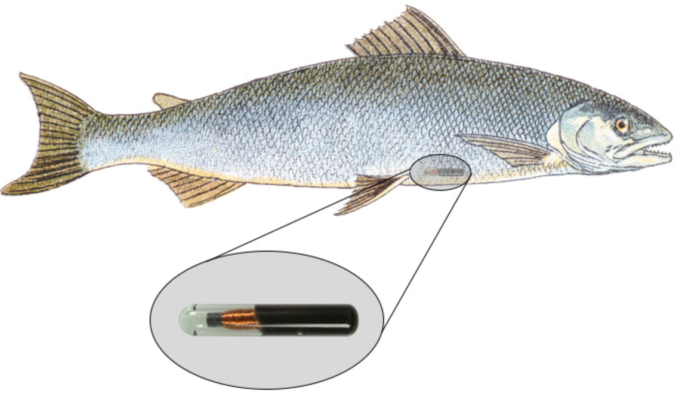

BlackfootFish$length <- (BlackfootFish$length - min(BlackfootFish$length, na.rm = TRUE)) /
(max(BlackfootFish$length, na.rm = TRUE) - min(BlackfootFish$length, na.rm = TRUE))
BlackfootFish$weight <- (BlackfootFish$weight - min(BlackfootFish$weight, na.rm = TRUE)) /
(max(BlackfootFish$weight, na.rm = TRUE) - min(BlackfootFish$length, na.rm = TRUE))Lab 7: Functions and Fish
The goal of this lab is learn more about exploring missing data and to teach you to write modular code.
1 The Data
This lab’s dataset concerns mark-recapture data on fish from the Blackfoot River, outside of Helena, Montana.
Mark-recapture is a common method used by Ecologists to estimate an animal population’s size, when it is impossible to conduct a census (count every animal). This method works by “tagging” animals with a tracking device, so scientists can track their movement and / or presence.

You may download the BlackfootFish.csv dataset on Canvas.
2 Part One: Summaries and Plots
3 (Midterm Review)
Task 1 – Summarizing Missing Data
The measurements of each fish captured were taken by a Biologist on a raft. This lack of “laboratory setting” opens the door to the possibility of measurement errors.
How many observations have missing values?
What variable(s) have missing values present?
Think about outputting both pieces of information in one table!
Task 2 – Visualizing Missing Data
Unfortunately, these missing values are not for only one year, trip, or section of river.
Create a thoughtful visualization exploring the frequency of missing values across the different years, sections, and trips.
4 Part Two: Adjusting the Data (Function Writing)
If I wanted to rescale every quantitative variable in my dataset so that the variables have values between 0 and 1. I could use the following formula:
\[y_{scaled} = \frac{y_i - min\{y_1, y_2,..., y_n\}}{max\{y_1, y_2,..., y_n\} - min\{y_1, y_2,..., y_n\}}\]
The following R code would carry out this rescaling procedure for the length and weight columns of the data:
This process of duplicating an action multiple times makes it difficult to understand the intent of the process. Additionally, it makes it very difficult to spot the mistakes. Did you spot the mistake in the weight conversion?
Often you will find yourself in the position of needing to find a function that performs a specific task, but you do not know of a function or a library that would help you. You could spend time Googling for a solution, but in the amount of time it takes you to find something you could have already written your own function!
Task 1 – Writing a Function
Let’s transform the repeated process above into a rescale_01() function.
- The function should take a single vector as its input.
- The function should return the rescaled vector.
Think about the “efficiency” of your function. Are you calling the same function multiple times?
Task 2 – Adding Stops
Now, let’s incorporate some checks into your function! Modify your previous code to create the following checks:
- the function should stop if the input vector is not numeric
- the function should stop if the length of the vector is not greater than 1
No need to write code here, simply add these stops to your code from Task 1!
Task 3 - Performing a Simple Test
First, test your function on a simple vector. Verify that the maximum of your rescaled vector is 1 and the minimum is 0!
x <- c(1:25, NA)Task 4 - Performing a More Difficult Test
Next, let’s test the function on the length column of the BlackfootFish dataset.
- Make side-by-side plots of the original values of
lengthand the rescaled values oflength.
Task 5 – Incorportaing Variables
Suppose you would for your rescale() function to perform operations on a variable within a dataset. Ideally, your function would take a dataframe and a variable name as inputs and return a dataframe where the variable has been rescaled.
Create a rescale_column() that accepts two arguments, (1) a dataframe, and (2) the name(s) of the variable(s) to be rescaled. The body of the function should call the original rescale_01() function you wrote previously.
Task 6 – Another Function Test
Alright, now let’s put your rescale_column() function to work! Use your rescale_column() function to rescale both the length and weight columns.
I expect that you only call the rescale() function one time!
5 Challenge: Incorporating Multiple Inputs
A frequently used measurement for fish health is a “condition index.” (Wikepedia article) The following simple equation can be used to calculate the approximate condition index of a fish:
\[\text{condition index} = \frac{weight}{length^3} \times 100\] ### Part 1
Write a function which calculates the condition index of a fish, given inputs of weight and length.
Consider whether your function will accept vectors as inputs or if it will accept variable names as inputs!
Part 2
Make a thoughtful visualization of how fish conditions have varied over the duration of this study.